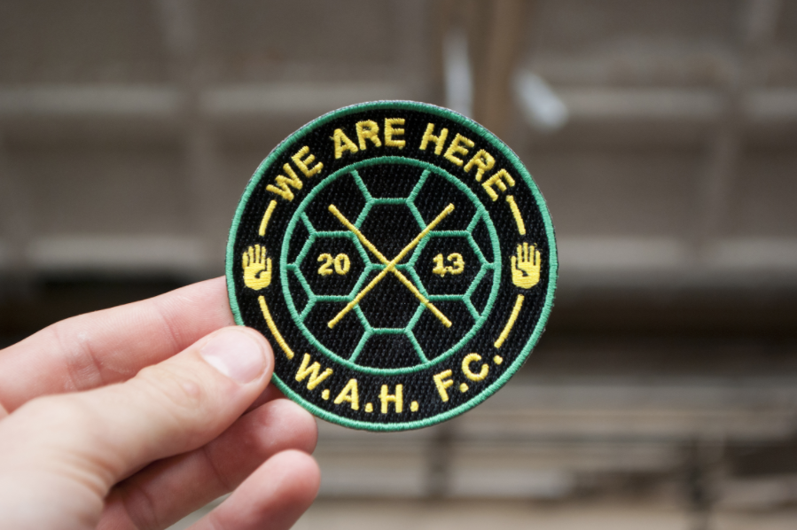
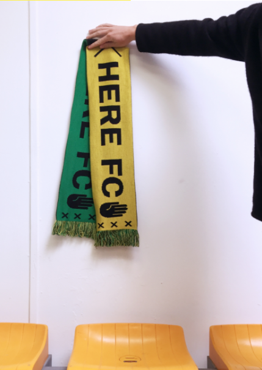

LIN VENAbout Lin Ven
Graduation
process
Great concept... Now what?
Great concept...
Now what?
A case for applied graphic design
LIN VEN
THEORY
Introduction: Theory and Action
A group of adolescents wander around a city while they talk about very complicated and important matters. It is hard to follow what they are actually talking about and they give the impression that they are well informed. All of a sudden an old man attracts their attention. The man is sitting in a 3-meter high pole. The group looks up and ask the man how and why he ended up there. “Well, I am not sure.” There is a moment of silence after which the guys ask the man if they could help him get down again. The man hesitates but answers: “I don’t think so.” The guys look confused, take a moment and decide to continue walking. After a while, one of the guys says:
“No worse than us. He is all action, no theory. We are all theory and no action.” Quote from the movie Waking Life, Linklater, Richard, 2011, USA Quote from the movie Waking Life, Linklater, Richard, 2011, USA
Nowadays, graphic design education places great emphasis on conceptual and theoretical aspects of design. However, this rarely results in a real design (strategy) positioned in our reality. I have the desire to implement my designs in the real world and see if my ideas actually work.
Therefore, I researched the ways graphic design is applied in practice.
How can you use your design skills to generate a positive impact in the real world?
To have an impact, designers should put our design ideas out there, in the real world, and see what happens.
I have conducted literature research and interviewed experts. I analyzed different (graphic design) projects and compared these case studies. The result of my research is presented in two sections: a theoretical section and a section where I present four case studies.
When talking about the relationship between thinking and doing, I would like to examine the process within our own bodies. The following question can be asked:
What makes a thought transform into an action?
As I am typing this text I do not experience the physical actions needed to make my fingers move across the keyboard. For me it feels automated. Something that is not tangible (my thoughts about the text I want to write down) is translated to a physical action (movement of my fingers on the keyboard). What happens exactly between those two events?
Deepak Chopra (1947), a doctor and expert in the field of mind-body healing, talks about this mysterious gap between a thought and an action in his book Quantum HealingQuantum Healing, Exploring the Frontiers of Mind / Body Medicine, Bantam, 1989. Quantum Healing, Exploring the Frontiers of Mind / Body Medicine, Bantam, 1989 Chopra mentions the discovery of neuropeptides. Neuropeptides are small protein-like molecules used by neurons to communicate with each other. Wikipedia search 'Neuropeptide' Wikipedia search ‘Neuropeptide’ Chopra visualizes the mystery between a thought and an action in the following diagram:

Point A represents a thought; all the other letters represent physical actions that follow from point A. For example, point A is my thought on what to write down. This thought somehow leads to the activation of neurons that make my fingers move in a specific way across the keyboard and translate my thought to letters appearing on my computer screen. As Chopra explains:
“All the physical changes that take place in the body can be connected in a logical chain of cause and effect, except for the space after A. This is the point where the transformation from thought to matter first occurs and it must occur, or the rest of the events will not happen.” Page 96, Quantum Healing, Exploring the Frontiers of Mind / Body Medicine Quantum Healing, Exploring the Frontiers of Mind / Body Medicine, p.96
Chopra does not give the answer to the question what makes a thought translate into an action. He emphasizes the importance of the transformation of the immaterial thought to the material action.
Whereas Chopra focuses on the mysterious connection between mind and body philosopher Réne Descartes (1596-1650) states that mind and body are detachable. The mind can exist outside of the body, and the body is an entity that cannot think. This view is known as Cartesian dualism. The word Cartesius is the Latin translation of the name Descartes. The word Cartesius is the Latin translation of the name Descartes. Descartes is famous for his quote “Cogito ergo sum”. He sees the mind as consciousness and the physical brain as the source of intelligence.
“Although I have a body that is joined very closely to me, since I have on the one hand a clear and distinct idea of myself insofar as I am a thinking, non-extended thing and, on the other hand, I have a distinct idea of the body insofar as it is merely and extended, non-thinking thing, it is certain that I (that is, the mind) am really distinct from my body and that I can exist without it.” Page 97, Descartes, René, Meditations, What is a human being?, Penguin Group, 2010 Descartes, René, Meditations, What is a human being?, Penguin Group, 2010, p. 97
Opposite to this dualistic view is monism. Monism is a theory that proposes that the brain and the mind are the same thing. There are several types of MonismWikipedia search 'Monism'. Wikipedia search 'Monism' I would like to highlight three of them.
1. Physicalism: the mind derives from the matter.
2. Idealism: the brain derives from the mind.
3. Neutral monism: mind and matter are two entities that are both made of the same matter and are in function of a third entity.

Action before Thinking (to survive)
Referring back to Chopra’s diagram an important question could be asked: What comes before point A? What if an action actually leads to the thought represented by point A?
As human beings we have basic instinctual behaviors. These are called fixed action patterns, also known as FAP’s. a FAP is a sequence of unlearned acts that are a reaction to certain stimuli. It is not a learned behavior; it is a hard-wired behavior. Wikipedia search 'Fixed action pattern' Wikipedia search ‘Fixed action patterns’
For example, a newborn baby will automatically grab any object that is given. Nobody taught the baby to do this. In addition, newborns grasp hair more firmly than other objects. If you take steps back in the evolution of the humankind and observe modern-day primates, you’ll see that baby monkeys are hard-wired to hold on tight to their furry mothers. Pomeroy, Ross, 3 November 2011, Fixed Action Patterns and Their Human Manifestations Pomeroy, Ross, 3 November 2011, Fixed Action Patterns and Their Human Manifestations, retrieved from: https://www.realclearscience.com/blog/2011/11/fixedactionpatterns.html As a newborn baby acts before thinking, you could say action is of great importance when it comes to the existence and survival of humankind.
By measuring the brain activity of volunteers who had been told to make a spontaneous movement, Scientist Benjamin Libet (1917-2007) discovered that conscious decisions to act are preceded by an unconscious buildup of electrical activity within the brain. Wikipedia search 'Benjamin Libet' Wikipedia search ‘Benjamin Libet’ Volunteers were asked to make a note at the moment they became aware of the action they needed to make. While there was a delay measured between the urge to move and the movement itself, an other signal was measured. The brain got active before the volunteers were aware of the physical action that had to be taken. This is called the readiness potential (RP). Ananthaswamy, Anil, 6 August 2012, Brain might not stand in the way of free will Ananthaswamy, Anil, 6 August 2012, Brain might not stand in the way of free will, retrieved from: https://www.newscientist.com/article/dn22144-brain-might-not-stand-in-the-way-of-free-will/ Libet’s experiment shows that unconscious processes in the brain are the true initiator of conscious acts, and free will therefore plays no part in their initiation.

The above figure visualizes the experiment of Libet. Our RP rises 350 milliseconds before we are actually aware of the action we are going to take. And 550 milliseconds before we actually take action.
If unconscious brain processes have already taken steps to initiate an action before consciousness is aware of any desire to perform it, you could conclude action is the ground force for our thoughts. It is in our nature to take action.
Environmental Input
Where I examined different ideas on the relationship between our bodies and minds in the first chapter, I would like to look into our personal relationship with the outside world. Our physical bodies are the sensory apparatuses that make it possible for us to perceive the world. During our lives we build up a database of references that are based on previous experiences. The more you experience, the bigger your database of references will be.
As a designer it is necessary to be informed about the current society. Real life experiences lead to a more sophisticated perception of the real world. It will help you as a designer to position yourself within the society. Going out there, in the real world, trains your ability to anticipate, provoke, react, criticize and imagine. It enables you to come up with refreshing design solutions that might add something valuable to our society.
Communicative Output
"Ideas are like steam that condenses into water upon touching the level of reason and logic." Dubuffet, Jean, Anticultural Positions, 1951 Lecture, The Arts Club of Chicago Dubuffet, Jean, Anticultural Positions, 1951 Lecture, The Arts Club of Chicago
-
Jean Dubuffet
To position yourself in the outside world you need a language to communicate with others. As designers it comes natural to translate the perceived input from our surroundings into creative output. One of the steps of the creative process is giving shape to first ideas. As designers this most probably will be sketches, keywords and other forms of visualizations. Language is a powerful tool that enables us to place ideas from our individual mind into a broader context: our reality. Talking about language I am not only talking about verbal language. Painters use paint and brushes, poets use written words, mathematics use formulas, graphic designers use typography, etc.
By being able to communicate with others about your ideas, your ideas become something ‘real’ within a shared context. As Yuval Noah Harari explains in his book Sapiens: A Brief History of Humankind the linguistic abilities gave humankind the opportunity to rule the world for over 70,000 years.
“What, then, is so special about our language? The most common answer is that our language is amazingly supple. We can connect a limited number of sounds and signs to produce an infinite number of sentences, each with a distinct meaning. We can thereby ingest, store and communicate a prodigious amount of information about the surrounding world.” Harari, Yuval Noah, Sapiens: A Brief History of Humankind, Harper, 2011, p.24 Harari, Yuval Noah, Sapiens: A Brief History of Humankind, Harper, 2011, p.24
-
Yuval Noah Harari
Where a meerkat is just able to warn other meerkats for danger, a modern human is in addition able to explain the problem to other people and discuss possible solutions.
Although our linguistic abilities are very useful for communicating with others, we have to stay aware of the limits of this tool. As Jean Dubuffet states in his lecture Anticultural Positions:
“…our culture is based on complete trust in language (particularly written language) and on a belief in its capacity to translate and elaborate thought. Now this strikes me as a mistake. Language, I find, is a gross, extremely gross stenography, a system of highly rudimentary algebraic signs, damaging rather than serving thought.”Anticultural Positions, 1951 Lecture, The Arts Club of Chicago Dubuffet, Jean, Anticultural Positions, 1951 Lecture, The Arts Club of Chicago
The better you are able to formulate your ideas, the better you are able to communicate this to others. This means, the size of your vocabulary defines your ability to express your thoughts and concepts.
As a designer or artist you have the advantage of not being limited to written or spoken words only. By training your creative skills, you enlarge your design vocabulary. The ability to visualize your ideas gives you the advantage to convey a message as precise as possible. It gives you the possibility to adjust your design proposals according to specific clients. It makes it easier for you to explain your concepts to the outside world. The bigger your vocabulary, the easier it is to explain your concepts to the outside world.
Graphic Design Education
As a graphic design student at the Royal Academy of Art The Hague you are educated to become “a critical thinker and versatile practitioner who can develop outstanding concepts for visual communication”. Student profile Graphic Design at the Royal Academy of the Arts, The Hague Student profile Graphic Design at the Royal Academy of the Arts, The Hague- https://www.kabk.nl/en/programmes/bachelor/graphic-design Furthermore you are asked to reflect on "the social responsibilities of a contemporary designer, tackle challenges posed by the rapidly evolving new-media landscape, and seek answers to the problems of tomorrow.” In other words, you work with big topics that are beyond the walls of the academy. This leads often to artistic concepts that are fictive and hypothetical. Those ideas can be refreshing and eye opening. However, in school it rarely comes to a real design (strategy) positioned in our reality. Of course the process of creating a hypothetical design is useful training to get your head around complicated matter. But what concrete impact does this form of design have in our ‘real’ world?
Intellect is an important tool to be able to position yourself within a discourse. But solely formulating your opinion is not the most effective way of having impact. It is valuable to be able to verbalize why you either agree or disagree with a certain view, but the power lays within creating an alternative.
The Relation Between Creativity and Intellect
“You are too highly educated to know what is right.”
-
Quote from the movie
Nothing PersonalNothing Personal, Antoniak, Urszula, 2009, USA
Nothing Personal, Antoniak, Urszula, 2009, USA
Creative ability seems related to intellect. People with a high IQ are most likely also creative. According to Jordan Peterson there is more to it than intellect. When getting an assignment, you will be triggered and come up with a certain amount of ideas. The first ideas will be very closely associated with the initial assignment. These first ideas will lead to more distanced ideas which are measurable as creative.
“For something to be creative it has to be novel and useful at the same time [...] If it is too novel nobody can understand it and it is unlikely to be useful. There is a range of convenience.” tmcleanful, 2017, May 21, Jordan Peterson on How Creative you are tmcleanful, 2017, May 21, Jordan Peterson on How Creative you are, https://www.youtube.com/watch?v=pKZYS3fFTc8&feature=youtu.be
Peterson states that a good creative response is unexpected and at the same time useful. The more probable your response, the less creative it is. This all has to do with originality which can be measured by the improbability of your ideas. Next to creative thought you have creative achievement. As Peterson explains, creative achievement means to take original ideas and actually implement them in the world.
A certain level of intellect helps you to formulate concepts.Formulating your ideas is not always enough to generate a positive effect. Implementing your ideas will have a greater impact in the real world.
Conclusion [1/2]
To sum up, we should place our designs in the real world because taking action is in our nature. Next to that, going out there leads to a more sophisticated perception of our society, it makes designers able to position themselves within the society and it trains design skills that enables designers to add something valuable to the world around them.
Many thanks to all teachers of the Royal Academy of Art. Special thanks to Merel Boers, Dirk Vis, Michel Hoogervorst, Matthias Kreutzer, Dorian Kingma, Max Bouwhuis, Robin van Otterloo, Bonnie van Dam, Merel Steenbrink, Katarína Gališinová and Rebecca Rui. January 2018
&
A case for applied graphic design
PRACTICE
As this paper is a case for applied graphic design, I would like to explore the aspects of applied graphic design by four case studies:
Case #1
Applying your designs in the real world makes you work with a subject instead of about a subject.
Applying your designs in the real world challenges your prior assumptions and can lead to unexpected and effective results.
As a contemporary designer you have social responsibilities and are asked to “tackle challenges posed by the rapidly evolving new-media landscape, and seek answers to the problems of tomorrow.” Student profile Graphic Design at the Royal Academy of the Arts, The Hague Student profile Graphic Design at the Royal Academy of the Arts, The Hague, https://www.kabk.nl/en/programmes/bachelor/graphic-design Social and political involvement can lead to structural changes in our society. It feels very tricky to touch upon themes big as equality, climate change, women rights, etcetera. If you decide to work with these sensitive topic, it should be very on point or either positionless. Comedian Tim Minchin describes this as a false dichotomy.
“Most of society’s arguments are kept alive by a failure to acknowledge nuance. We tend to generate false dichotomies and then try to argue one point using two entirely different sets of assumptions.” Minchin, Tim, 2013, Speech at the graduation ceremony of The University of Western Australia Minchin, Tim, 2013, Speech at the graduation ceremony of The University of Western Australia, http://www.timminchin.com/2013/09/25/occasional-address/
A way to break free from these false, rigid dichotomies as a designer, is to work with your subject instead of about your subject. This will help you understand a subject from within and it decreases the change of wrong assumptions. It can lead to a more nuanced view and you will be better informed since you are close to the primary source.
Sarah van Sonsbeeck v.s. We Are Here FC
The current migration flow is a topic a lot of artists and designers are working with nowadays. Recently artist Sarah van Sonsbeeck exhibited the project we may have all come on different ships, but we’re in the same boat now 2017, Oude Kerk, Amsterdam,19th of May till 17th of September 2017, Oude Kerk, Amsterdam,19th of May till 17th of September at the Oude Kerk in Amsterdam. The Oude Kerk used to be a port church where ships were blessed and prayers were done for seamen to come home safe. 2017, Oude Kerk, Amsterdam,19th of May till 17th of September 2017, Oude Kerk, Amsterdam,19th of May till 17th of September
Exhibition of Sarah van Sonsbeeck in the Oude Kerk, Amsterdam, photo by Gert Jan van Rooij, 2017
Aesthetically and conceptually this project is appealing. But what impression does this exhibition leaves on the visitor? An aesthetic impact? Some knowledge about the history of the Oude Kerk? An interest in Sarah van Sonsbeecks work? Hee, but wait - was she not responding on the wave of migration we are dealing with in Europe? I can image she was aware of the sensitivity of the subject and decided not to make any statement about it. But dealing with such a sensitive, social and urgent topic I think you should aim for a bigger impact than just an aesthetic one.
Take for example the work done by photographer Katarína Gališinová. She decided to spend time with the people from We Are Here FC. We Are Here FC is a soccer team part of the Amsterdam based organization We Are Here. We Are Here We Are Here, http://wijzijnhier.org/who-we-are/ The team consists of refugees residing in Amsterdam despite the fact that they have not (yet) gotten a residence permit. They are not allowed to work and the municipality of Amsterdam provides them with only a night shelter (commonly referred to as Bed, Bath and Bread arrangement). They use the simple game of soccer to unite and create a supportive community. We Are Here FC We Are Here, http://wijzijnhier.org/who-we-are/
Katarína got involved with We Are Here out of personal interest. By investing time in both the people and the organization, she gained an insight into the structure and the strength of We Are Here. In the beginning, the Wereldhuis Amsterdam Wereldhuis Amsterdam Wereldhuis Amsterdam, http://wereldhuis.org/ provided the soccer players of We Are Here FC with the simple tools needed to play soccer. By spending time with the team Katarína drew the conclusion that there was still something missing: the visibility of the team. You need two to tango, but how can Dutch society tango with these men if they do not even know about their existence?
Katarína started documenting their daily life and tried to create a narrative with these images. As she said: "It felt logical to do this. I wanted to show these people to the world and thought I would be able to capture them in the purest form by becoming a part of their daily struggle. However, I was not satisfied with the impact of the images and for some time could not find the reason for this unsatisfactory feeling." Until she decided to make a official soccer portrait photo series of the team members. "By photographing them as real football stars I focused on their talent as soccer players and not on their misery as refugees out of a procedure. When showing the end result to the guys I understood what was wrong with my first approach. When seeing themselves in this new context their eyes sparkled. As many of them say, being a refugee out of procedure makes you feel like nobody. They lost their homes, families, jobs and dignity but seeing themselves as soccer players, all together in unified shirts, made them feel proud of being who they are and what they have been through." Interview with Katarina Gališinová, 2017, 6 December Interview with Katarína Gališinová, 2017, 6 December
After a while, Katarína involved graphic designer Menno de Bruijn. Together they worked on a new visual identity for We Are Here FC. They organized a few brainstorm sessions with the players and as a result, Menno came up with a couple of proposals for a new logo and a websiteWe Are Here FC, followed up by merchandise items such as soccer cards for each player of the team, a poster, a badge and a We Are Here FC scarf.
We Are Here FC logo
We Are Here soccer cards, photo by Katarína Gališinová
We Are Here FC batch, photo by Katarína Gališinová
We Are Here FC scarf, photo by Katarína Gališinová
Menno used several visual elements that refer to particular characteristics of We Are Here FC. The hand in the We Are Here FC logo symbolizes the rejection of refugees by the Dutch state and at the same time it is a call for attention. The cross in the middle symbolizes a location on a map - the actual being 'here'. Moreover, the three crosses of the well known Amsterdam logo are incorporated in the scarf as well. The aesthetic aspects are clearly recognizable as a soccer identity.
In the long term, the new visual identity will contribute to the visibility of the refugees within the Dutch society. Menno and Katarína decided to go out there, talk with the soccer players and apply their creative abilities to improve the situations of rejected refugees in the Netherlands. By doing this, they found a way out of the dichotomy by applying their design skills in the real world.
On the 2nd of July 2017, Katarina, Menno, Sophie Schwartz and I organized a one-day soccer tournament: The Royal Super CupThe Royal Super Cup.
We invited the refugees of We Are Here FC to play together with teachers, staff, students and alumni from the Royal Academy of Art, The Hague. The goal of the gathering was simply to connect on an equal human level through a game of football.
For a day mixing art school people with the players of We Are Here FC lead to beautiful encounters. We gave the players a guided tour through the graduation show after which we created mixed teams of students, staff, teachers and We Are Here FC players. Everybody was eager to win the Royal Super Cup and gain eternal fame.
Although The Royal Super Cup was a one-day event, it brought people together and can be seen as the cherry on top of the work initiated by Katarina.
The Royal Super Cup aftermovie, July 2017

The Royal Super Cup participants, July 2017
Case #2
Applying your designs in the real world leads to the possibility of creating content as a designer.
Where a lot of designers are able to make proper design for existing content, action and a participatory approach leads to the possibility to create content yourself as a designer. With the use of your creative skills, this content can be visualized and get accessible for a broader audience. By combining content creation and your creative skills you can distinguish yourself from other designers which can be very valuable in the competitive environment of design.
Stichting Buurtbeheer en –ontwikkeling Zeeheldenkwartier
Stichting Buurtbeheer en –ontwikkeling Zeeheldenkwartier is an organisation based in The Hague. Also known as BBOZ, they help people that have difficulties taking part in society. They provide personal guidance and work closely together with local authorities of The Hague. They provide the city with employees that contribute to the maintenance of the public space.
BBOZ asked me to come up with a new corporate identity consisting of a new logo and a website design proposal. What I had to offer as a graphic designer to BBOZ were my design skills and solution driven concepts. As I plead for in Case #1, I wanted to work with the team and employees of BBOZ to get a better insight in their organization. Therefore, I decided to visit the location and started a conversation with the people behind the organization. In that way harvest valuable personal stories.
BBOZ asked me to come up with a new corporate identity consisting of a new logo and a website design proposal. What I had to offer as a graphic designer to BBOZ were my design skills and solution driven concepts. As I plead for in Case #1, I wanted to work with the team and employees of BBOZ to get a better insight in their organization. Therefore, I decided to visit the location and started a conversation with the people behind the organization. In that way harvest valuable personal stories.
In the end, I designed a corporate identity as BBOZ asked for but incorporated the design in a publication existing of the interview with the director and photos made of the workplace. In this way I gave the new identity a broader context and communicated their story rather than only a designed logo to the outside world.
Pages from the publication BBOZ KABK, 2017, design by Lin Ven
Pages from the publication BBOZ KABK, 2017, design by Lin Ven
Pages from the publication BBOZ KABK, 2017, design by Lin Ven
Case #3
Applying your designs in the real world gives the opportunity to measure the effects of your design.
There are different ways to approach topics as a designer. Deciding for a participatory approach gives you the opportunity to measure the effects of your design. I would like to compare two projects dealing with the same topic with different design approaches.
We Are Public v.s. Poster Almanak
We Are Public is a community based, cultural platform located in Amsterdam, The Hague and Brabant. People can become a member for 15 euro a month and in return they are able to visit a preselected cultural program for free. We Are Public is founded by Bas Morsch and Leon Caren as a reaction to the cultural budget cuts by the Dutch government. They took concrete action and came up with a long-term solution for the problem. As they say themselves: “a new reality asks for new ideas.” About page, We Are Public About page, We Are Public, https://www.wearepublic.nl/en/ We Are Public is able to pay the makers, provide members with a wide range of cultural programs and contribute to a healthier cultural environment by filling up concert halls, theaters and cinemas. We Are Public is a success since visitor rates in the Dutch cultural field went up and it is proven that people started to visit a more varied selection of cultural programs. They are planning to expand their platform to Haarlem and Delft in the beginning of 2018, aiming to be a national platform in the future.
The Amsterdam based graphic design collective Almanak (Rob van den Nieuwenhuizen, Jeremy Jansen, Barbara Hennequin) reacted in a different way on the subsidy cuts than Bas Morsch and Leon Caren did. With their graphic expertise Almanak designed a poster showing the direct consequences of the extreme cultural subsidy cuts. This poster was part of the Graphic Design Festival Breda in 2012.
Poster by Almanak, 2012
In the 2012 catalogue of the Graphic Design Festival Breda the poster is explained as followed:
“The numbers mentioned on the poster, are subsidy amounts per year for a selection of cultural institutions (fine arts, design, architecture and e-culture) as adviced by the Dutch Council for Culture and by The Netherlands Architecture Fund in their advice report for cultural subsidies. As seen on the poster, a vast number of cultural institutions will probably be annihilated by our own government. As a result they’ll disappear completely from the Dutch cultural landscape.” 2012, Catalogue Graphic Design Festival Breda 2012, Catalogue Graphic Design Festival Breda, https://issuu.com/gdfb/docs/gdfb2012_poster_project
We Are Public and Almanak have different intentions with their initiatives. Where We Are Public came up with a long-term alternative as a solution to a problem, Almanak solely wanted to visualize the impact of the cultural budget cuts. By raising awareness with their static design, Almanak contributes in a positive way to the discourse. But the big difference is that We Are Public created the possibility to measure the effect of their action taken. Where We Are Public has concrete results showing the effect of their actions (higher visitor rates in the cultural field in The Netherlands), Almanak stays a static design which makes it impossible to measure concrete effects caused by their work.
Case #4
Applying your designs in the real world does not always lead to the desired effect but it can still function as a personal outlet.
When you decide to test or apply your designs in the real world you most probably have a desired effect in mind. Sometimes your action can lead to unexpected effects, as I explained in Case #1. These effects can be positive but can also be disappointing. Although your participatory approach does not always lead to the desired effect, it can still function as a personal outlet.
SIRE v.s. SIRE-EUS?!
A good example is a project I recently did together with producer Renée Janssen and graphic designer Vera van der Seyp.
SIRE is a Dutch independent organization that uses campaigns to create awareness about social topics within our society. In 2017 SIRE launched the campaign ‘Laat jij jouw jongen genoeg jongen zijn?’ 2017, Campaign initiated by SIRE freely translated: Do you give your boy enough freedom to be masculine? 2017, Campaign initiated by SIRE, freely translated: Do you give your boy enough freedom to be masculine? http://laatjijjouwjongengenoegjongenzijn.nl/ The goal of this campaign was to encouraged parents to let their sons behave more masculine. Together with a lot of other people, I strongly disagreed with the way they tried to make a problem visible. SIRE formulated the initial problem as followed:
“Boys and girls are equal, but not the same. We, Dutch educators, sometimes lose sight of the fact that boys develop in a different way and learn differently than girls. In general, educators expect children to behave calmly, listen carefully and sit still. While boys learn more by discovering, experimenting, taking risks, doing. ‘Boys-behavior’ is less appreciated by educators in recent years. Restraining boys inhibits their development.” 2017, Translated from the official campaign website. Translated from the website http://laatjijjouwjongengenoegjongenzijn.nl/
Their commercial was widely broadcasted on national television. In this commercial SIRE visualizes boys-behavior as young boys playing in the forest, running around wildly, experimenting with fire, and so on. In our opinion this behavior should not be labeled as boys-behavior only. There are enough young boys who do not feel like horsing around and there are many girls that actually do feel like that. In our opinion the campaign of SIRE is a form of problematic gender stereotyping. We consider it a missed opportunity to not look beyond these clichés and to actually focus on the fact that all children should experience more freedom of movement. Instead of the question How can we let our boys be more masculine?, we think the following question should be asked: How do we give all children their freedom of movement?
We decided to take action and create an alternative campaign within 48 hours after SIRE launched their campaign. The original website SIRE consisted of the commercial, several tips for educators, quotes from educational experts and a FAQ section. We copied the original campaign website from SIRE and changed the content of the website. For this we consulted a primary school teacher. She rewrote tips that were meant for boys to behave more masculine, into versions that were inclusive and addressing children in general. We adjusted the imagery from only boys to boys and girls and wrote a statement to explain our initiative.
Website of our alternative campaign ' Laat jij je kind genoeg kind zijn?'
Website of our alternative campaign ' Laat jij je kind genoeg kind zijn?'
Website of our alternative campaign ' Laat jij je kind genoeg kind zijn?'
After launching our website and Facebook page, we wrote an open letter to SIRE and explained why we strongly disagree with their campaign. We introduced our alternative campaign and proposed to meet and have an open discussion about their approach and our proposal. They replied but unfortunately were not open for meeting us.
Renée, Vera and I decided to not only ventilate our frustrations but actually take action to make this frustration visible. Next to the 350 likes of our Facebook page, it is hard to measure the concrete effect of our campaign. At least we were able to translate the collective criticism into a concrete form; our alternative campaign.
Conclusion [2/2]
To conclude, applying your designs in the real world makes you work with a subject instead of about a subject. This can challenge your prior assumptions and can lead to unexpected and effective results. Secondly, applying your designs in the real world leads to the possibility of creating content as a designer. Thirdly, applying your designs creates the possible to measure the effects of your design. Lastly, applying your designs in the real world makes it possible to measure the outcome. In case of an undesired result you at least gave yourself the opportunity to ventilate your frustration by taking action.
Many thanks to all teachers of the Royal Academy of Art. Special thanks to Merel Boers, Dirk Vis, Michel Hoogervorst, Matthias Kreutzer, Dorian Kingma, Max Bouwhuis, Robin van Otterloo, Bonnie van Dam, Merel Steenbrink, Katarína Gališinová and Rebecca Rui. January 2018